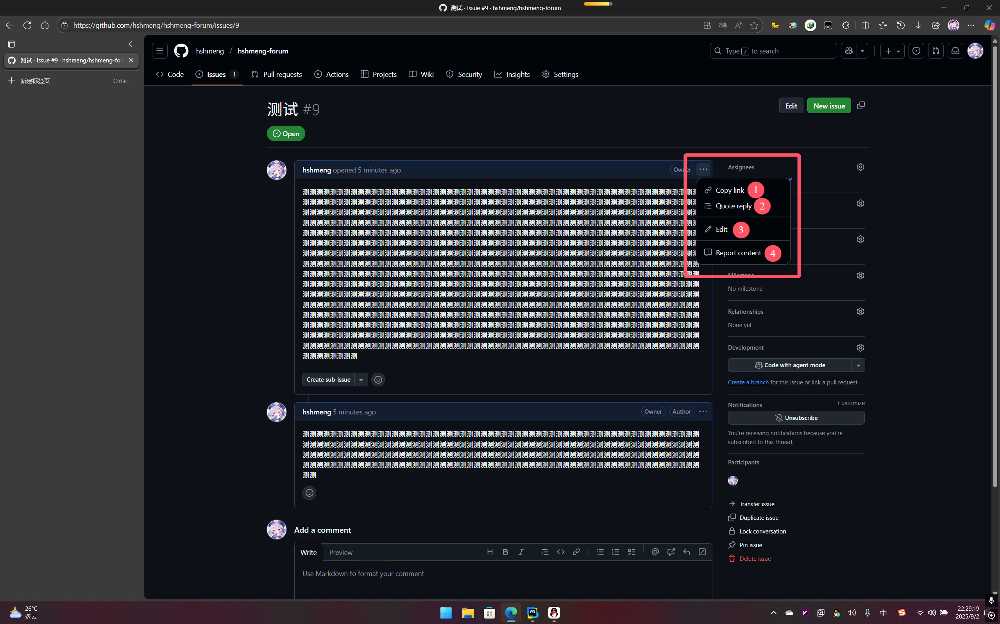
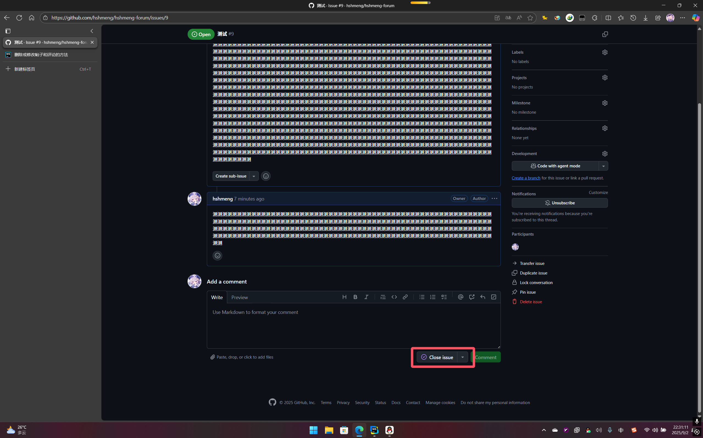
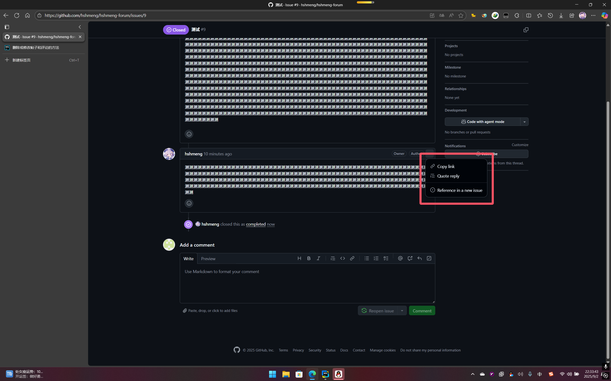
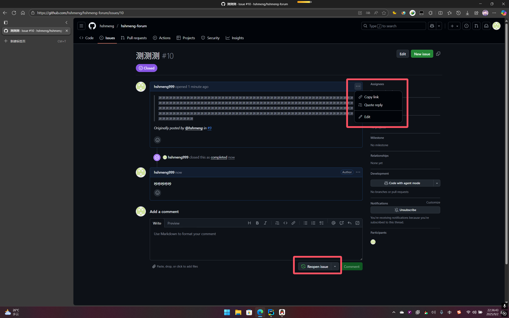
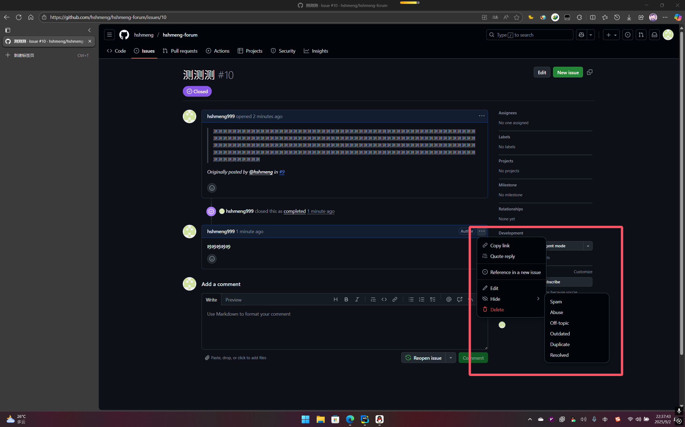
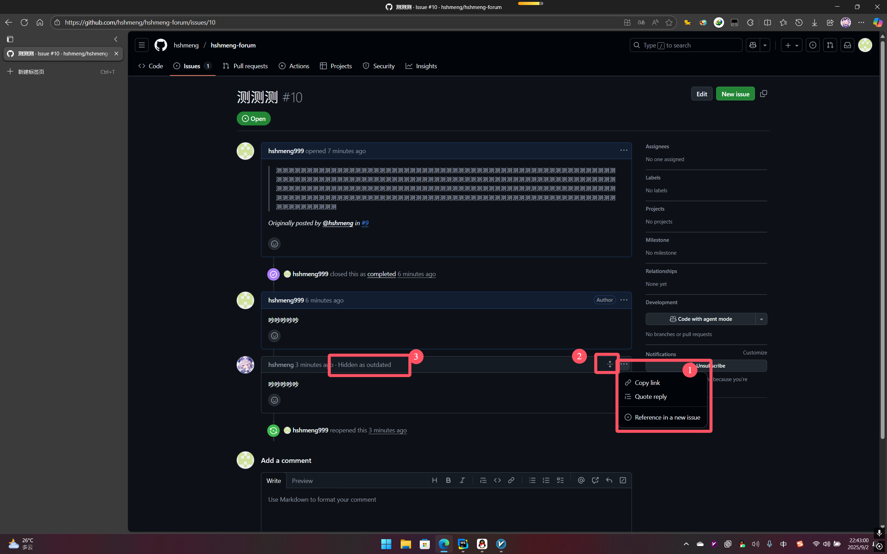

①是帖子内容
②及其下面的所有都是评论内容
③删除按钮（此操作将会删除整个帖子内容包括下面的评论）
每一个内容或者评论右上角都有三个点
①复制链接
②回复内容
③修改内容
④举报内容
你也可以通过“Close issue”按钮关闭帖子
这不会删除帖子内容，只是让帖子临时关闭，所有人在关闭页面都可以看到
在不是自己的关闭的帖子中，依旧可以评论，还可以进行复制链接、引用回复、新帖子中回复
在是自己的关闭的帖子中，依旧可以修改、删除、评论，还可以进行复制链接、引用回复、新帖子中回复，或者重新开启
在自己的评论中，可以标记隐藏自己的评论，但是这依旧是可见的
由①可知无法给其他人隐藏或显示，由②可知是隐藏的，由③点击可以显示